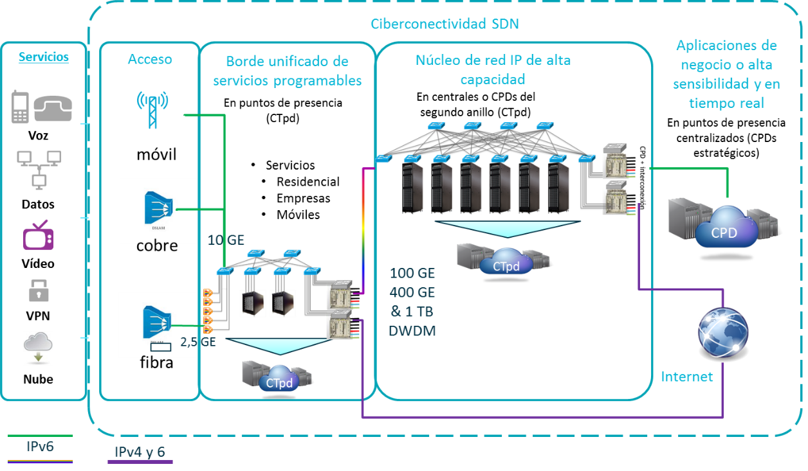
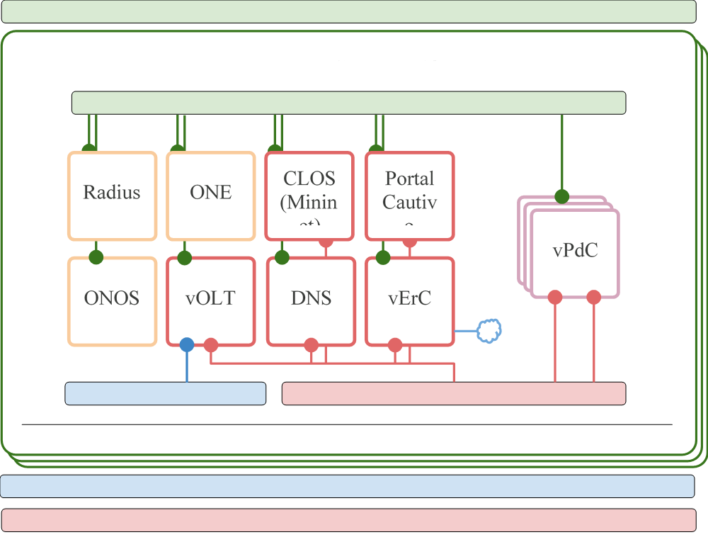

Tabla de ilustraciones
Ilustración 13 Esquema del caso 1 2
Ilustración 14 Arquitectura de la maqueta 3
Construcción de la PdC deL Caso 1
El caso base que vamos a construir y que será la implementación de referencia, comprende los siguientes fundamentos:
-
Está desarrollada con componentes de código abierto
-
Es un sistema integrado que está completo para someter a pruebas de campo
-
Va a ejercitar todas las funcionalidades para las que se ha diseñado

Ilustración Esquema del caso 1
La arquitectura convencional de CTpd ha sido simplificada en el objetivo de validar el diseño de esta implementación. Esta sección describe los componentes involucrados en este diseño.
Componentes

Ilustración Arquitectura de la maqueta
En la Ilustración 14 podemos identificar los componentes de la prueba de concepto, que están a su vez detallados en la Tabla 1.
| Nombre | Tipo | Descripción |
| Nodos de Computación | Nodo Físico | 2 Nodos Físicos. Todas las VLANs están conectadas a ambos nodos. Exceptio la red de Cliente que solo está conectada a test-oln-hn-01. |
| ONE | Máquina Virtual | Instalación de OpenNebula y de OneFlow. Responsable del despliegue de la MVs y de delegar la configuración de red en ONOS.. |
| ONOS | Máquina Virtual | Instalación del SDN ONOS. Las siguientes aplicaciones estarán desplegadas: AAA OLT FWD VR |
| vOLT | Máquina Virtual | Esta MV actúa como el punto de entrada del tráfico del cliente al CTpd. Dispone de una instancia de Open vSwitch que está controlado por ONOS y que enrruta el tráfico al tejido CLOS. Ya que está MV está conectada a la red del Cliente deberá ser ejecutada en test-oln-hn-01. |
| CLOS | Máquina Virtual | Una instancia de mininet que simula el tejido CLOS. |
| DNS | Máquina Virtual | Servicio DNS. |
| Portal Cautivo | Máquina Virtual | El servicio Telco 3.0, que estará conectado a la base de datos de los usuarios y determinará si un cliente tiene acceso o no a internet. |
| vErC | Máquina Virtual | Enrutador de la Central. Provee acceso a internet. |
| vPdC | Máquina Virtual | Pasarela de Cliente. Esta MV será instanciada por OneFlow para cada cliente e implementará los servicios básicos de conectividad: configuración DNS, DHCP y anuncio de prefijos IPv6. |
| Bridge de red de Cliente | Bridge de Linux | Este bridge está conectado a un HGU (Home Gateway Unit) que generará el tráfico de Cliente. Se trata de una red puramente ethernet/L2 que está conectada al vOLT. |
| Bridge de red de Servicio | Bridge de Linux | La red interna de Servicios. |
| Bridge de red de Gestión | Bridge de Linux | Todas las MVs estarán conectadas a la red de Gestión de a través de este bridge. |
Tabla 1. Componentes de la prueba de concepto
Redes
Existen varias redes utilizadas en este proyecto, que están detalladas en la Tabla 2.
| Nombre | VLAN | Tipo/Direccionamiento | Descripción |
| Gestión (OLN_MGMT) | 302 | Ethernet L2 | Red de Gestión para todas las MVs de la maqueta. |
| Cliente (OLN_CLI) | 304 | IPv6 2a02:9008:4:b110::/64 |
Red de Cliente. |
| Servicio (OLN_SRV) | 303 | IPv4 10.95.84.0/26 |
Red de Servicio, usada por los servicios internos del CLOS. |
| Provisión (OLN_PROV) | Ethernet L2 | Red que conecta el OLT con el portal Cautivo previa la inicialización de un cliente |
Tabla 2. Redes de la Prueba de Concepto
Recursos de infraestructura
Los recursos de Hardware utilizados en esta prueba de concepto están descritos en la Tabla 3.
| Nombre | Descripción |
| test-oln-cn-01 | Nodo de Computación que será utilizado como un hipervisor de OpenNebula, utilizando la tecnología KVM como herramienta de virtualización: CPU: 8x Intel(R) Xeon(R) CPU E5450 @ 3.00GHz Memoria: 16 GB Almacenamiento: 236 GB |
| test-oln-hn-01 | Nodo de Computación que será utilizado como un hipervisor de OpenNebula, utilizando la tecnología KVM como herramienta de virtualización. CPU: 8x Intel(R) Xeon(R) CPU E5450 @ 3.00GHz Memoria: 32 GB Almacenamiento: 224 GB |
| HGU | Un Home Gateway Unit que generará y simulará el tráfico del Cliente. Estará conectado a la maqueta a través de la red del Cliente y del componente vOLT |
| Soporte de Red | La prueba de concepto tiene lugar en el seno de una red que particiona las VLANs 302, 303 y 304, y que a su vez provee enrutado para el acceso a internet. |
| Tabla 3. Infraestructura de la prueba |
OpenNebula
Diseño
En la Tabla 4 se muestra un resumen de la configuración del despliegue de OpenNebula.
| Sistema Operativo | Ubuntu 14.04 tanto en el Front-end como en los nodos de computación. |
| Hipervisor | 2 nodos de computación usando KVM. |
| Base de Datos | MySQL |
| Redes | Bridges de Linux y tecnología 802.1Q para la implementación de la segmentación por VLANs. |
| Almacenamiento | Almacenamiento local del Hipervisor. ~ 230 GB. |
| Autenticación | Nativo de OpenNebula |
| Interfaces | OneFlow, CLI, Sunstone |
| Tabla 4. Recursos de infraestructura de ONE | |
| Tanto la MV de OpenNebula como los nodos físicos de Computación han sido provisionados usando Ansible. El playbook está disponible aquí: https://github.com/Telefonica/ctpd/tree/master/ansible. Esto permitirá una reinstalación uniforme e idéntica en el futuro. Dado que este playbook contiene los detalles exactos de la provisión, para más detalles revisar este recurso. |
Front-end de OpenNebula
OpenNebula ha sido desplegada en una Máquina Virtual que está siendo ejecutada en el nodo test-oln-cn-01. Ha sido desplegada manualmente y configurada para exponer los siguientes servicios:
-
OpenNebula 4.14.2 (oned)
-
Planificador (mm_sched)
-
OneFlow (oneflow-server)
-
Sunstone (sunstone-server)
-
Línea de Comandos de Linux
Actualmente solo se ha desplegado un único Front-end, por lo que no hay Alta Disponibilidad. Sin embargo el entorno está preparado para configurarse en modo de Alta Disponibilidad tras desplegar un segundo nodo de Front-end.
Nodos de Computación
Los nodos de computación son responsables de proveer a las Máquinas Virtuales con los recursos necesario (por ejemplo CPU, Memoria, acceso a la red). OnLife es homogénea en cuanto a la tecnología utilizada para virtualizar, manejando 2 nodos con el hipervisor KVM. La configuración de los nodos también es homogénea en término de componentes de software instalados.
Para los nodos de computación se han instalado el siguiente software:
-
Libvirt y qemu-kvm
-
Paquete de nodo de OpenNebula 4.14.2 KVM
-
El usuario oneadmin tiene acceso de administración al almacenamiento, redes y virtualización.
-
Conexión SSH sin password entre los nodos y el Front-end.
-
Ruby instalado (utilizado por las sondas y drivers de OpenNebula)
Almacenamiento
OnLife utilizará el almacenamiento local disponible en los nodos, usando el driver SSH. Esto significa que no se ha implementado ninguna configuración específica para el almacenamiento.
Redes
Las redes han sido implementadas de acuerdo con la Tabla 5.
| Nombre | Interfaz | Bridge | Notas |
| Gestión (OLN_MGMT) | eth0 | br_mgmt | |
| Servicio (OLN_SRV) | eth1 | br_srv | |
| Cliente (OLN_CLI) | eth2 | br_cli | Solo disponible en el node test-oln-hn-01. |
| Provisión (OLN_PROV) | - | br_prov | Solo disponible en el node test-oln-hn-01. Red sin soporte de interfaz físico. |
Tabla 5. Implementación de las redes en los nodos
Autenticación
Los usuarios se mantendrán en la base de datos de OpenNebula, como usuarios nativos, y la autenticación se realizará mediante usuario/password.
Configuración del Front-end
OpenNebula se ha instalado y configurado para ejecutar los servicios básicos de OpenNebula: oned, el planificador mm_sched, OneFlow y Sunstone).
El sistema operativo es Ubuntu 14.04 obtenido directamente de los repositorios de Ubuntu.
En la Tabla 5 se detallan las modificaciones a los ficheros de configuración pertenecientes a OpenNebula.
Tabla . Resumen de los cambios de configuración de OpenNebula (relativos a /etc/one)
| Fichero de Configuración | Descripción |
| oned.conf | # Sample configuration for MySQL DB = [ backend = "mysql", server = "localhost", port = 0, user = "oneadmin", passwd = "opennebula", db_name = "opennebula"] |
| sunstone-server.conf | :host: 0.0.0.0 |
Configuración de los Nodos de Computación
Los nodos de computación han sido provisionados siguiendo este procedimiento:
-
Habilitar el repositorio de OpenNebula.
-
Instalación del paquete opennebula-node.
Los ficheros de configuración alterados durante la instalación están descritos en la Tabla 6.
Tabla Resumen de los cambios en los ficheros de configuración
| Fichero de Configuración | Descripción |
| /etc/apparmor.d/abstractions/libvirt-qemu | /srv/** rw, /var/lib/one/datastores/** rw |
Imágenes
Hay disponible una Ubuntu 14.04. Esta imagen será utilizada como Sistema Operativo para la mayoría de las Máquinas Virtuales y servicios que se utilizarán en esta maqueta: vOLT, ONOS, Portal Cautivo, etc.
Cuando se despliegue un nuevo servicio basado en una Máquina Virtual, se deberá de crear un nuevo template referenciando esa imagen. Las IPs se podrán listar de manera específica en el template de forma que un mismo servicio siempre tenga la misma IP.
En el caso particular de que el servicio necesite utilizar CentOS 6, existe asimismo una imagen de con esta distribución
Nodos / Clusters / VDCs
Los dos nodos de KVM son homogéneos. No se crearán clusters y todos los recursos serán incluidos en el VDC por defecto. Los dos nodos registrados en la nube no disponen de la misma capacidad, sin embargo OpenNebula monitorizará la capacidad disponible y escogerá dónde desplegar cada Máquina Virtual.
El nodo test-oln-hn-01 es el único conectado a la red OLN_CLI, por lo que la Máquina Virtual de vOLT deberá ser ejecutada en este nodo específicamente.
Almacenamiento y Datastores
El almacenamiento por defecto será local en los nodos de Computación. Por lo tanto, tanto el Datastore de Sistema como el de Imágenes deberán utilizar TM_MAD="ssh". Las imágenes serán almacenadas en formato Qcow2.
Redes Virtuales.
En la Tabla 7 se listan las redes virtuales existentes.
| :OLN_MGMT: | |
| Bridge | br_prov |
| Rango IPv4 | 10.95.84.21 10.95.84.35 |
| Template | DNS="10.95.121.180 10.95.43.86" GATEWAY="10.95.84.1" NETWORK_MASK="255.255.255.192" |
| OLN_SRV | |
| Bridge | br_srv |
| Rango MAC | 02:00:0a:5f:54:51 - 02:00:0a:5f:54:5f |
| Rango IPv4 | 10.95.84.81 - 10.95.84.95 |
| Rango IPv6 | 2a02:9008:4:b110:400:aff:fe5f:5451 - 2a02:9008:4:b110:400:aff:fe5f:545f |
| Template | GATEWAY="10.95.84.65" GATEWAY6="2a02:9008:4:b110::1" NETWORK_MASK="255.255.255.192" |
| OLN_PROV | |
| Bridge | br_prov |
| Rango MAC | 02:00:00:00:00:01 - 02:00:00:00:00:02 |
| Rango IPv6 | 2a02:9008:4:b117:400:ff:fe00:1 - 2a02:9008:4:b117:400:ff:fe00:2 |
| OLN_CLI | |
| Bridge | br_cli |
| Rango MAC | 02:00:00:00:01:00 |
| OLN_SRV_ROUTER | |
| Bridge | br_srv |
| Rango MAC | 00:00:00:00:00:01 |
| Rango IPv6 | 2a02:9008:4:b110:200:ff:fe00:1 |
| Template | GATEWAY6="2a02:9008:4:b110::4" |
Tabla 7. Resumen de los cambios en los ficheros de configuración.
Usuarios y Grupos
Existe un único usuario: oneadmin, al cual le pertenecen todos los recursos.
Servicios: Máquinas Virtuales y Templates
A continuación se detalla la lista de servicios que son ejecutados como Máquinas Virtuales. Aunque se hace referencia únicamente la Máquina Virtual, siempre existe un Template específico asociado a cada servicio.
TODO: Contexto General
Portal Cautivo y VNC
| Portal Cautivo | |
| Capacidad | - CPU = 0.1 - MEMORY = 1024 |
| Discos | - Ubuntu-14.04 / 10G |
| Redes | - OLN_MGMT - IPv4: 10.95.84.35 - OLN_SRV: - IPv4: 10.95.84.95 - IPv6: 2a02:9008:4:b110:400:aff:fe5f:545f - OLN_PROV: - MAC: 02:00:00:00:00:01 - IPv6: 2a02:9008:4:b117:400:ff:fe00:1 |
| Requisitos | Hipervisor test-oln-hn-01 |
ONOS (Telcaria)
Ensamblaje del bastidor
Estas son las instrucciones esquematizadas para armar el bastidor, en los repositorios github referenciados se encuentran las instrucciones detalladas. El bastidor de la prueba ya vendrá con la infraestructura ensamblada de origen y los programas precargados en la planta de ensamblaje del suministrador.
Infraestructura
Los servidores, conmutadores y bandejas de acceso se pueden ensamblar en varias configuraciones virtuales como se ilustra a seguir
Describir circuito de control y administración basado en el OCP/OCS de Microsoft
Instalación de los programas
La instalación de los programas que conforman el sistema se hará en el orden descrito a continuación
-
OpenNebula
-
ONOS-CTpd
-
ONOS-Tejido
-
OpenMano + OneFlow
Instalación de OpenNebula
Las instrucciones para instalar OpenNebula se encuentran en esta dirección IP
http://docs.opennebula.org/4.14/design_and_installation/building_your_cloud/ignc.html
y se puede descargar desde este sitio
http://downloads.opennebula.org/packages/opennebula-4.14.2/
La instalación sería la siguiente:
-
# wget -q -O- http://downloads.opennebula.org/repo/Ubuntu/repo.key | apt-key add -
-
# echo "deb http://downloads.opennebula.org/repo/4.12/Ubuntu/14.04/ stable opennebula" \ > /etc/apt/sources.list.d/opennebula.list
-
# apt-get update
-
# apt-get install opennebula opennebula-sunstone nfs-kernel-server
-
Cambiar en el Fichero /etc/one/sunstone-server.conf “:host: 127.0.0.1” por “:host: 0.0.0.0”
-
# /etc/init.d/opennebula-sunstone restart
-
Añadir al Fichero vi /etc/exports file “/var/lib/one/ *(rw,sync,no_subtree_check,root_squash)”
-
# service nfs-kernel-server restart
-
# su - oneadmin
-
$ cp ~/.ssh/id_rsa.pub ~/.ssh/authorized_keys
-
$ cat << EOT > ~/.ssh/config
-
Host *
-
StrictHostKeyChecking no
-
UserKnownHostsFile /dev/null
-
EOT
-
$ chmod 600 ~/.ssh/config
-
# wget -q -O- http://downloads.opennebula.org/repo/Ubuntu/repo.key | apt-key add -
-
# echo "deb http://downloads.opennebula.org/repo/4.12/Ubuntu/14.04/ stable opennebula" > \ /etc/apt/sources.list.d/opennebula.list
-
# apt-get update
-
# apt-get install opennebula-node nfs-common bridge-utils
-
Configurar fichero red: /etc/network/interfaces
-
auto lo
-
iface lo inet loopback
-
auto br0
-
iface br0 inet dhcp
-
bridge_ports eth0
-
bridge_fd 9
-
bridge_hello 2
-
bridge_maxage 12
-
bridge_stp off
-
# /etc/init.d/networking restart
-
# cat << EOT > /etc/libvirt/qemu.conf
-
user = "oneadmin"
-
group = "oneadmin"
-
dynamic_ownership = 0
-
EOT
-
# service libvirt-bin restart
Con esta ejecución se puede acceder al portal de OpenNebula en la URL: http://IP:9869. La password de oneadmin está en el fichero ~/.one/one_auth.
Instalación de ONOS
Las instrucciones para instalar ONOS se encuentran en esta dirección IP, empezando en el punto 2. de las mismas
https://wiki.onosproject.org/display/ONOS/ONOS+from+Scratch
Pero las instrucciones se modificaron de esta manera:
Instala Git:
$sudo apt-get install git-core
Descarga Karaf y Maven:
Create two directories called ~/Downloads and ~/Applications. Download the Karaf 3.0.5 and Maven 3.3.9 binaries (the tar.gz versions of both) into ~/Downloads and extract it to ~/Applications. Keep the tar archives in ~/Downloads; we'll need that later.
| Si decides utilizar directorios distintos, como se puede ver a continuación, entonces tendrás que editar el fichero ~/onos/tools/dev/bash_profile (en el caso de la raspberry pi es /home/pi/onos/tools/dev/bash_profile) y cambiar la configuración allí.
$ mkdir Downloads
$ mkdir /opt/Apps
$ cd Downloads
$ wget http://archive.apache.org/dist/karaf/3.0.5/apache-karaf-3.0.5.tar.gz
$ wget http://archive.apache.org/dist/maven/maven-3/3.3.9/binaries/apache-maven-3.3.9-bin.tar.gz
$ tar -zxvf apache-karaf-3.0.5.tar.gz -C /opt/Apps/
| $ tar -zxvf apache-maven-3.3.9-bin.tar.gz -C /opt/Apps/ |
|---|
Instala java8:
$ sudo apt-get install software-properties-common -y
$ sudo add-apt-repository ppa:webupd8team/java -y
$ sudo apt-get update
$ sudo apt-get install oracle-java8-installer oracle-java8-set-default -y
En el caso de que no funcionara, descarga manualmente java (http://www.oracle.com/technetwork/java/javase/downloads/jdk8-downloads-2133151.html)
E instálalo:
$sudo update-alternatives --install "/usr/bin/java" "java" "/opt/Apps/jdk1.8.0_77/bin/java" 1
$sudo update-alternatives --install "/usr/bin/javac" "javac" "/opt/Apps/jdk1.8.0_77/bin/javac" 1
$sudo update-alternatives --set java /opt/Apps/jdk1.8.0_77/bin/java
$sudo update-alternatives --set javac /opt/Apps/jdk1.8.0_77/bin/javac
Más info en: http://www.rpiblog.com/2014/03/installing-oracle-jdk-8-on-raspberry-pi.html
Descarga ONOS:
$git clone https://gerrit.onosproject.org/onos
A partir de ahora suponemos que ONOS está instalado en el home del usuario, e.g. /home/pi/onos
Incluye las siguientes lineas en el fichero .bashrc:
. ~/onos/tools/dev/bash_profile
export ONOS_ROOT=~/onos
source $ONOS_ROOT/tools/dev/bash_profile
Ejecuta el bash para que se carguen:
$bash
Comprueba que se han cargado correctamente:
$ echo $ONOS_ROOT
/home/pi/onos
$ echo $KARAF_ROOT
/opt/Apps/apache-karaf-3.0.5
Configura la instalación:
Edita el fichero de configuración:
$sudo nano /opt/Apps/apache-karaf-3.0.5/etc/org.apache.karaf.features.cfg
Incluye el siguiente texto en la sección de featuresRepositories:
mvn:org.onosproject/onos-features/1.5.0-SNAPSHOT/xml/features
Compila con maven ONOS:
$cd ~/onos
$ mvn clean install # or use the alias 'mci'
Si todo ha ido bien debería compilarse entero, si tienes problemas, aquí hay posibles soluciones:
-
Actualizar java a la última versión disponible
-
No hay forma de compilar onos-incubator-rpc-grpc, por lo que la única opción es no hacerlo, para ello basta con comentar la siguiente línea en el fichero ~/onos/incubator/pom.xml
<!--
<module>rpc-grpc</module>
-->
Ahora hay que construir ONOS:
https://wiki.onosproject.org/display/ONOS/Running+ONOS+locally+on+development+machine
$cd /home/pi/onos/tools/build
$onos-build
Ejecutar ONOS:
$onos-karaf
Para acceder vía web:
http://192.168.0.200:8181/onos/ui/login.html#/topo
karaf/karaf
onos/rocks
Antes de que se me olvide, al intentar instalar mininet dice esto (hay que comprobar que funciona para CentOS):
Install.sh currently only supports Ubuntu, Debian, RedHat and Fedora.